Distance-Vector Protocols
Algorithm Sketch
In this section, we’ll design a distance-vector protocol, which is one of three classes of routing algorithms (along with link-state and path-vector).
Distance-vector protocols have a long history on the Internet and ARPANET (the predecessor to the Internet). The prototypical distance-vector protocol is the Routing Information Protocol (RIP), and the D-V protocol we’ll design shares many similarities with RIP.
To gain some intuition for the routing protocol we’ll study in this section, consider the following network.
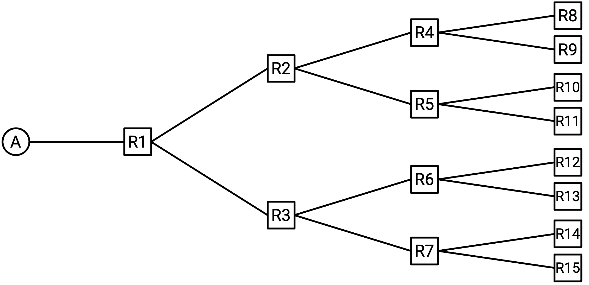
To start out, every router’s forwarding table is empty. Our goal is to fill in the forwarding tables of every router, such that packets can be routed from anywhere to the destination, A.
To start, A can tell R1: “I am A.” Now, R1 knows how to forward packets to A.
Now that R1 has a path to A, it can tell its neighbors, R2 and R3: “I am R1, and I can reach A.”
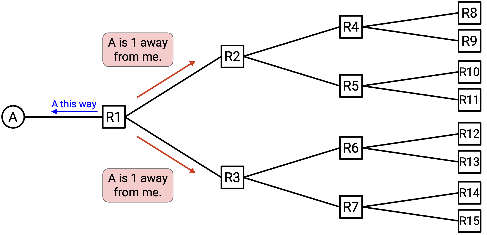
Now, R2 and R3 know that they can reach A by forwarding packets to R1.
R2 can now tell its neighbors, R4 and R5: “I am R2, and I can reach A.” Similarly, R3 can tell its neighbors, R6 and R7: “I am R3, and I can reach A.”
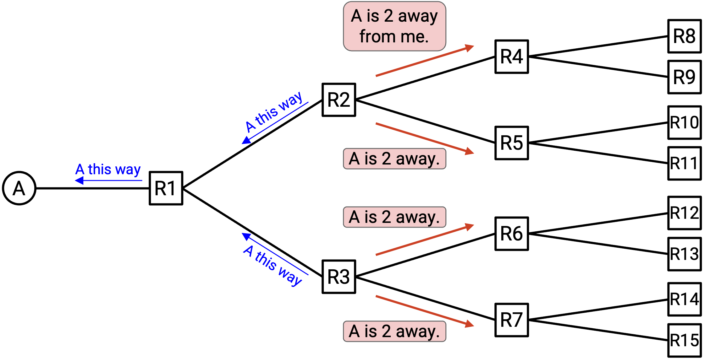
Now, R4 and R5 know that packets for A can be forwarded to R2, and R6 and R7 know that packets for A can be forwarded to R3.
The process continues: R4, R5, R6, and R7 each tell their neighbors who they are, and that they can reach A. By the end, everybody’s forwarding table is filled in, and we can route packets from anywhere in the network towards A.
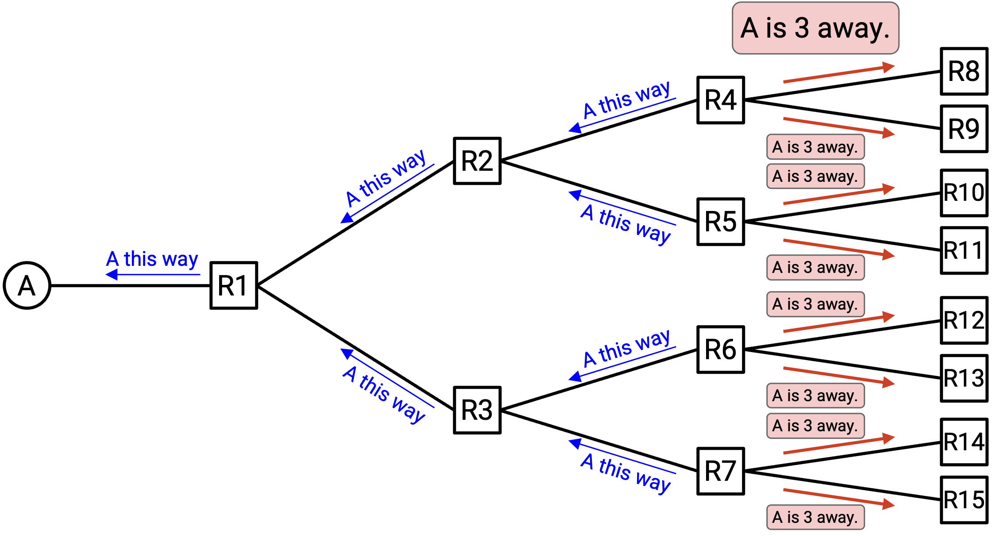
In summary: When you receive an announcement from someone saying they can reach A, you should write down who sent the announcement. Now, you can send messages bound for A through that person.
Also, now that you have a way to send messages to A, you should make an announcement to all of your neighbors, so that they can send messages bound for A through you.
What if there were multiple destinations? We could run this same algorithm repeatedly, once per destination. The forwarding table would then contain multiple entries, one per destination.
In these notes, we’ll focus on a single section for simplicity, but the protocol we’ll design can extend to multiple destinations.
Let’s review our protocol so far.
For each destination:
- If you hear about a path to that destination, update the table.
- Then, tell all your neighbors.
Direction of Announcements and Messages
In this protocol, it’s easy to confuse the the direction in which announcements and messages are sent.
The announcements for how to reach A start at A, and propagate outward. For example, B sent an announcement to D, saying “I am B, and messages for A can be sent through me.”
By contrast, the actual messages being sent to A are sent inward, toward A. For example, a message might start at D and be sent to B on its way to A.
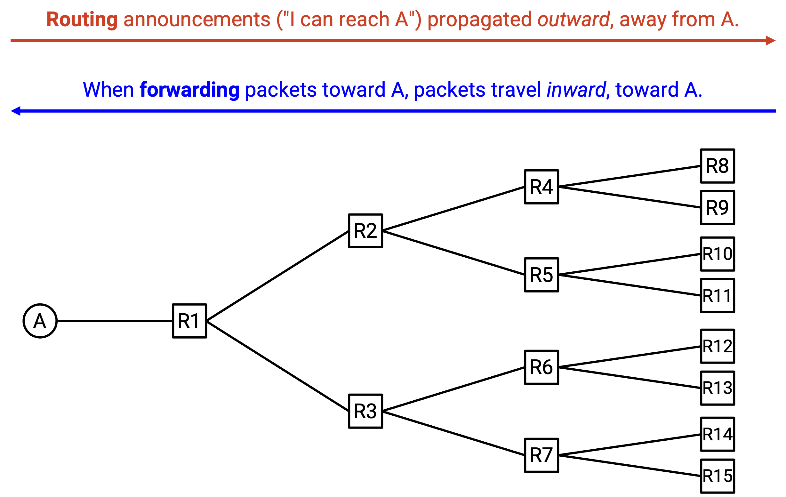
The direction of announcements is exactly the opposite of the direction of the messages themselves. Be careful not to confuse announcements with the actual messages!
Rule 1: Bellman-Ford Updates
What if there are multiple paths to reach A?
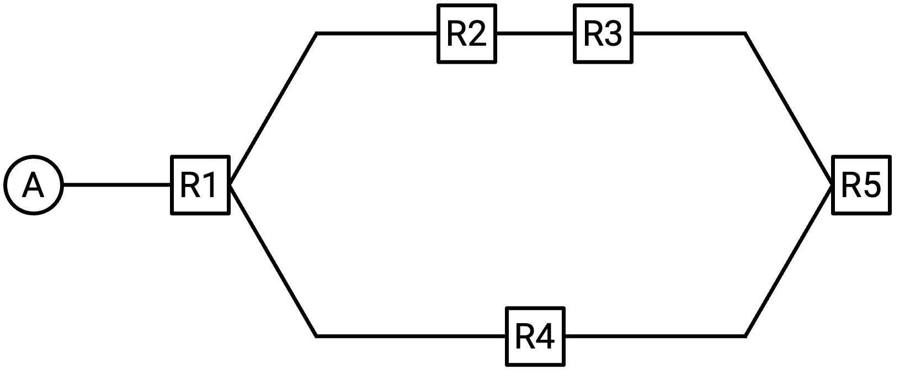
In this scenario, both R3 and R4 will announce that they can reach A. Should R5 choose to forward packets to R3 or R4?
Recall that our goal is to find least-cost routes through the network. To allow routers to pick the least-cost path out of multiple being advertised, we’ll need to also include costs in the announcements.
R3’s announcement now says: “I am R3, and I can reach A with cost 3.”
R4’s announcement now says: “I am R4, and I can reach A with cost 2.”
Now, R5 notices that R4 is offering the shorter path, and decides to forward packets via R4.
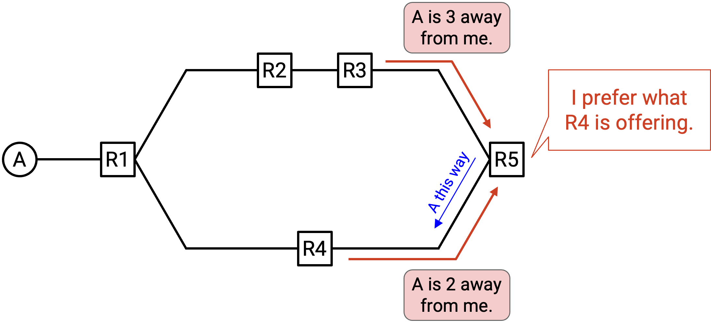
We’ll use the forwarding table to remember the best-known cost to the destination (and the corresponding next-hop). Each entry of the forwarding table now tells us: the destination, the next-hop for that destination, and the cost to reach the destination via that next hop.
Note: Formally, the forwarding table stores key-value pairs, mapping each destination to a 2-tuple containing the next hop and the distance. We’ll draw tables with 3 columns for simplicity.
R5 might not hear about both paths simultaneously, so we’ll need to be more precise about what happens when we hear about a new path. There are three possibilities when we hear about a path:
-
If the table doesn’t have a path to the destination, accept the path. If I don’t have a way to reach A, I should accept any path offered.
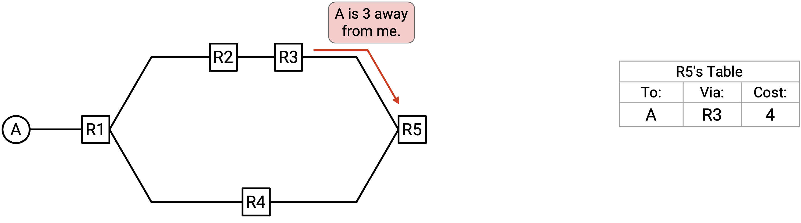
-
If the new path (that we hear about) is better than the best-known path (from the forwarding table), we should accept the new path, and replace the old path from the table.
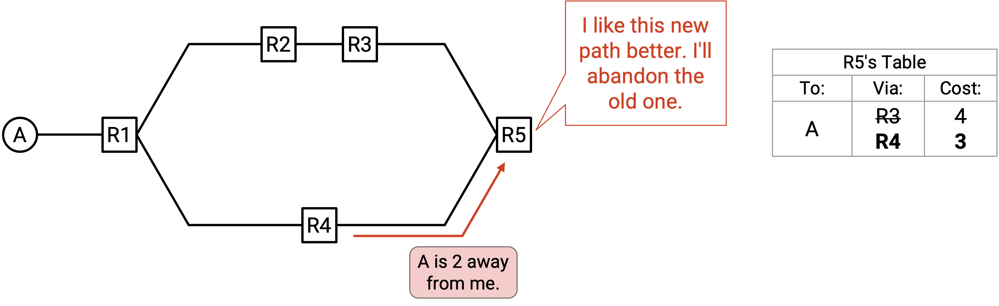
-
If the new path (that we hear about) is worse than the best-known path (from the forwarding table), we should ignore the new path, and keep using the path in the table.
Let’s review our protocol so far.
For each destination:
- If you hear about a path to that destination, update the table if:
- The destination isn’t in the table.
- The advertised cost is better than the best-known cost.
- Then, tell all your neighbors.
How do we know if a new path is better or worse? We have to be careful, because not all link costs are the same. When someone advertises a path, the cost via that path is actually the sum of two numbers: The link cost from you to the neighbor, plus the cost from the neighbor to the destination (as advertised by the neighbor).
As a concrete example, suppose we hear: “I am R1, and A is 5 away from me.” The cost of this new path is actually 1 (the link cost from us to R1), plus 5 (the cost from R1 to A, from the advertisement), which is 6.
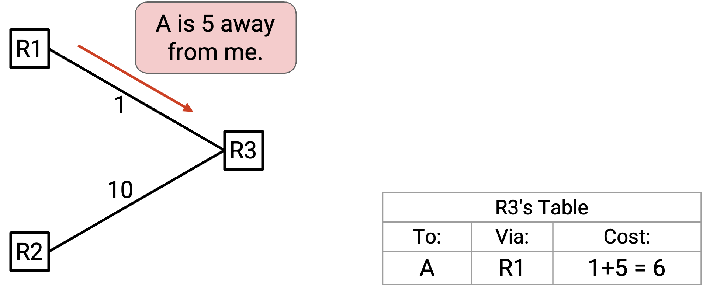
Later, we might hear: “I am R2, and A is 3 away from me.” It is incorrect to just look at the cost in the advertisement. In this case, the cost of the new path is actually 10 (the link cost from us to R2), plus 3 (the cost from R2 to A, from the advertisement), which is 13. This cost is not better than our best-known cost of 6, so we don’t update the table. Packets still get forwarded to R1.
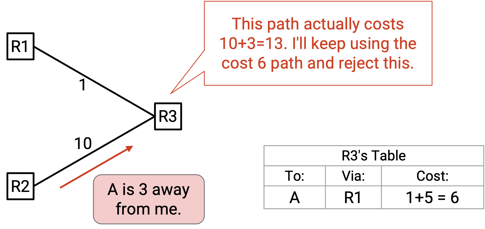
Let’s review our protocol so far.
For each destination:
- If you hear about a path to that destination, update the table if:
- The destination isn’t in the table.
- The advertised cost, plus the link cost to the neighbor, is better than the best-known cost.
- Then, tell all your neighbors.
For every announcement we hear, we have to compare two numbers. One number is the best-known cost in the table. The other number is the sum of the link cost to the neighbor, plus the advertised cost from neighbor to destination. If the latter number is lower, we use the new path and abandon the old path.
Rule 1: Distributed Bellman-Ford Algorithm
Does this operation look familiar? It turns out, this is exactly the relaxation operation from Dijkstra’s shortest paths algorithm!
Bellman-Ford is another shortest paths algorithm that relies on relaxation as the key operation. Bellman-Ford is even simpler than Dijkstra’s: Cycle through all the edges repeatedly, relaxing every edge, until we get all the shortest paths.
You might have implemented Dijkstra’s or Bellman-Ford before in a data structures class, like CS 61B at UC Berkeley. Unfortunately, the code you wrote wouldn’t be very useful for our routing protocol. Remember, the routing protocol must be distributed, because routers don’t have a global view of the network (no central mastermind). Also, the routers are operating asynchronously. There’s nobody enforcing the order in which routers perform relaxation operations, or the order in which routers send out announcements.
Instead, the routing protocol that we’ve been designing is a distributed, asynchronous version of the Bellman-Ford algorithm. The protocol is distributed, because we aren’t asking a single computer to run the entire algorithm. Instead, every router is computing its own part of the answer (populating its own forwarding table) without seeing the entire graph. The protocol is asynchronous, because the routers can all run the algorithm at the same time, without needing to control the order of operations.
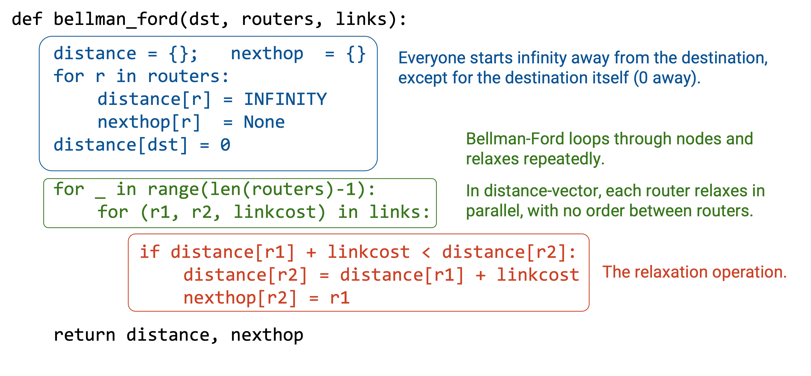
Note: Although we’re showing a single destination for simplicity, don’t forget that our routing protocol will be able to find shortest paths to all destinations, just like the centralized (single-computer) Dijkstra’s or Bellman-Ford algorithms.
Bellman-Ford Demo
Terminology note: When we send a message like “I am R1, and I can reach A with cost 5,” to our neighbors, this is often called announcing or advertising a route. Notice that the advertisement contains three values: the destination, your identity (so your neighbors can forward to you), and the total cost from you to the destination.
To restate the algorithm so far one more time:
When you receive an announcement from another router, you add the cost from the destination to the other router (this cost is in the announcement), plus the cost of the link from the other router to you. If this sum is less than the best-known distance to destination in your table, you replace your forwarding table entry for this destination with the new next hop (identity of the other router from the announcement) and the new distance (the sum you just computed).
What if you receive an announcement from another router, and the destination isn’t in your forwarding table? You don’t have a best-known distance to this destination, because you don’t know how to reach this destination yet. In this case, you can add a new entry to your forwarding table with the new destination, and the next hop and cost from the announcement.
When you change your forwarding table, that means that you’ve discovered a new path to the destination. In order to propagate this new path to the rest of the network, you will need to announce this new path (destination, your identity, and cost via you) to your adjacent routers.
With this algorithm in mind, let’s run through an example. In this network, we’ll assume all edges have cost 1 since the edges are unlabeled. We want to populate the forwarding tables with routes to A, the one and only destination.
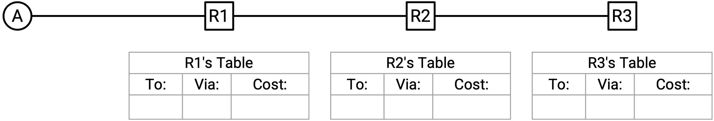
First, using static routing, we hard-code an entry in R1’s forwarding table. To reach destination A, the next hop is A itself, and the cost of this path is 1.
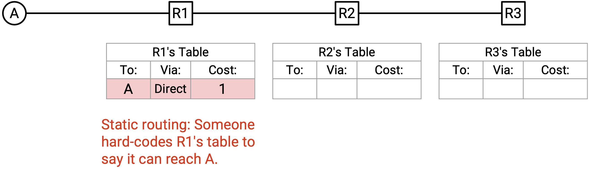
R1’s forwarding table has changed, so R1 will create a new announcement with 3 values: the destination (A), the router’s identity (R1), and the cost to the destination via this router (1). This announcement is sent to all of R1’s adjacent routers, namely only R2.
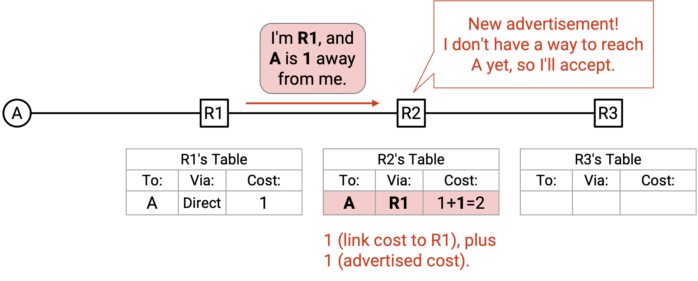
R2 receives this announcement and looks in its forwarding table for an entry corresponding to destination A. The forwarding table is empty, so no such entry exists. Therefore, R2 will add a new entry with 3 values: the destination (A), the next hop (R1, from the announcement), and the cost to the destination via R1 (2, summing the cost in the announcement and the cost of the link to R1).
R2’s forwarding table has changed, so R2 will make an announcement with 3 values: the destination (A), the router’s identity (R2), and the cost to the destination via this router (2). This announcement is sent to all of R2’s adjacent routers, namely R3 and R1.
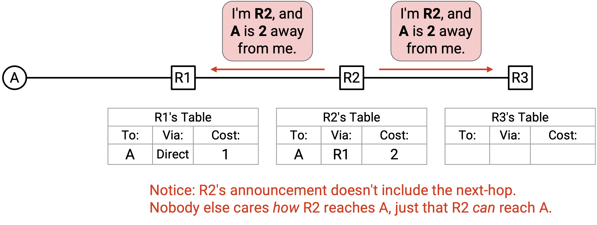
Note that in our protocol so far, routers send announcements to all of their neighbors. This means that R2’s announcement is sent to R1 as well. If this bothers you, stay tuned, we’ll revisit it later.
R1 receives this announcement. According to R1’s forwarding table, the best-known way to reach A has cost 1. The path via R2 would instead cost 2 (from R2’s announcement), plus 1 (link to R2), for a total of 3. This is a worse way to reach A, so R1 will ignore this announcement and leave its forwarding table unchanged.
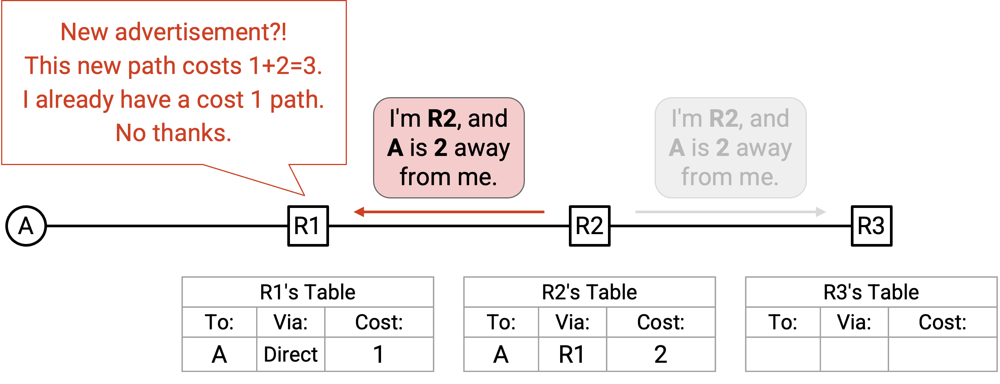
R3 also receives the same announcement. R3’s forwarding table is empty, so R3 will install a new entry with 3 values: the destination (A), the next hop (R2, from the announcement), and the cost to the destination via R2 (3 summing the cost from the announcement, and the cost of the R3-R2 link).
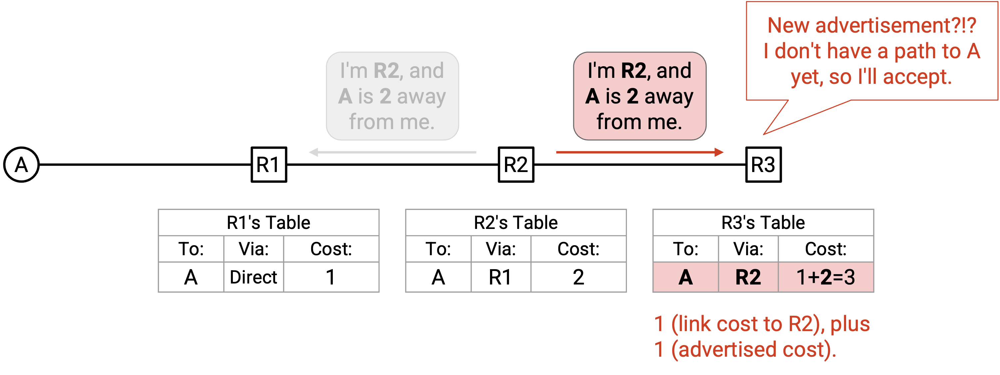
According to our rules so far, if you update your forwarding table, you need to send an announcement to all your neighbors. Even though we can see that this next announcement won’t change anything, R3 doesn’t have the same global view of the network that we have, so R3 will send an announcement to all of its neighbors, namely R2. The announcement contains: destination (A), next hop (R3), and cost via this next hop (3).
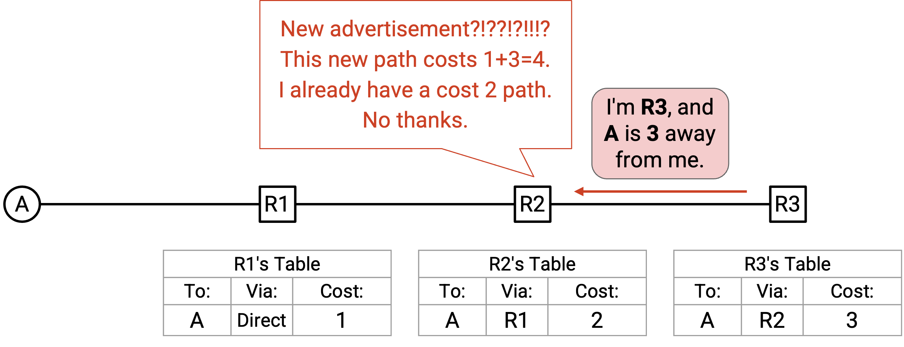
R2 receives this announcement. R2 knows of a way to reach A with cost 2, from the forwarding table. The announcement offers a path with cost 3 (from the announcement), plus 1 (cost of R2-R3 link), for a total cost of 4. This is worse than the cost in the forwarding table, so R2 ignores the announcement.
R2 did not update its forwarding table, so it does not make an announcement. At this point, no further announcements are made, and we can see that every router has populated its forwarding table with information about how to reach A. We can also see that the forwarding tables together form a valid, least-cost delivery tree with the shortest routes for reaching A.
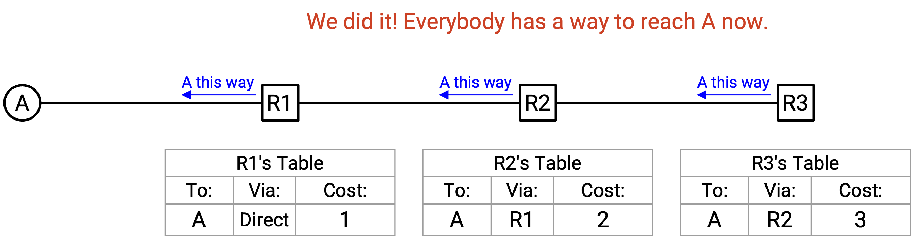
Rule 2: Updates From Next-Hop
Recall one of our routing challenges from the last section: The network topology can change.
Suppose that we hear an advertisement from R2, saying that A is 3 away from R2. If there’s nothing in our table, we’ll accept this advertisement and record a cost of 1+3=4..
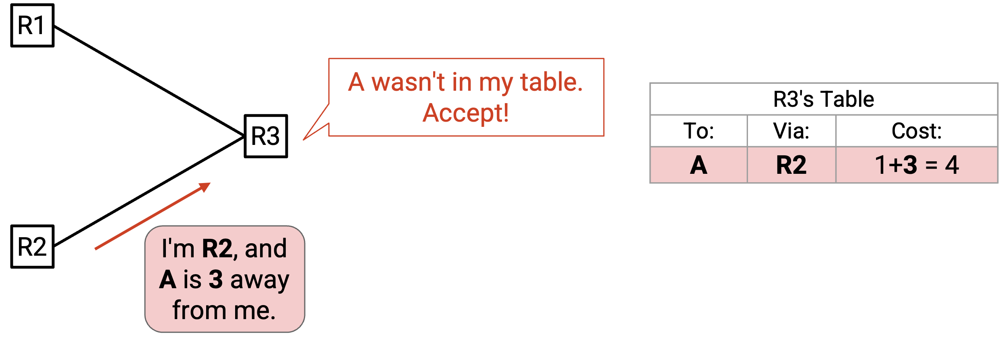
Later, we might hear a different advertisement from R2, saying that A is 8 away from R2. From the previous rule, we would reject this, because the advertised cost (1+8=9) is worse than our current cost (4).
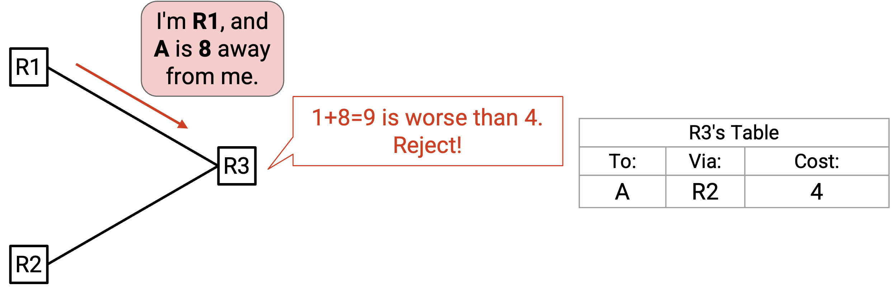
However, we have to be careful about rejecting this advertisement. The router making the announcement (R2), was the same as the next hop router we were using. R2 is trying to say: “If you’re using me as a next hop, my distance to A is no longer 3, it’s 8.” But we ignored this message because we weren’t thinking about the possibility that paths might change.
To fix this, we have to modify our update rule. If we hear an announcement from the next-hop router (the router with the best-known path that we were forwarding packets to), we should treat that announcement as an update, and edit our forwarding table. We should do this even if the announcement produces a worse path, because the next hop could be telling us that the path cost has changed and gotten worse.
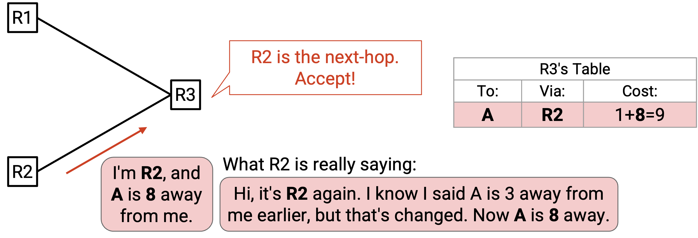
Note that when this new rule applies, we don’t update the destination or the next hop in the forwarding table, only the distance. In the example, packets at R3 destined for A are still forwarded to R2 (same destination, same next hop), but the cost via R2 changed.
Let’s review our protocol so far.
For each destination:
- If you hear an advertisement for that destination, update the table if:
- The destination isn’t in the table.
- The advertised cost, plus the link cost to the neighbor, is better than the best-known cost.
- The advertisement is from the current next-hop.
- Then, tell all your neighbors.
In order to support changing topologies, routers will run the routing protocol indefinitely.
Suppose we ran the protocol indefinitely, with no topology changes. Initially, some relaxations will succeed and the forwarding tables will change. Eventually, the algorithm will converge when we have found all the least-cost routes through the network. At this point, if we continue relaxing the edges, the forwarding tables will not change. Every relaxation will be rejected, because the best-known paths to the goal are all the shortest paths, and we’ll never find a better path to replace the current shortest paths. The state of the network at convergence is called steady state.
Later, suppose we change the topology (e.g. maybe a router fails). As we continue running the protocol, some relaxations might succeed again, since we’ve changed the underlying graph. After some time, the delivery tree will converge again on the new least-cost routes and stop changing until the next time the topology changes.
As an analogy, consider a pool of water. In the steady state, with no disturbances, the surface of the water is perfectly still. If you toss a rock in the water, there will be some ripples as the environment adjusts to the change you just made, but after some time, the surface of the water will become perfectly still again.
Rule 3: Resending
Recall another one of our routing challenges from the last section: Packets can get dropped.
For example, let’s rewind to the very beginning of the example from earlier. R2 and R3 have empty forwarding tables, and R1 is updated with the hard-coded route to A. What if R1 issues an announcement, but the packet is dropped? R2 never hears an announcement, and the protocol fails.
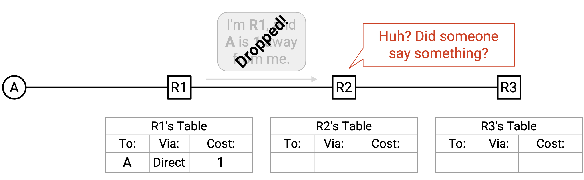
You could try to design a more complicated scheme to ensure reliability (e.g. forcing recipients to send acknowledgements), but let’s use something simple: If you have an announcement to make, re-send that announcement every few seconds. It turns out this simple approach works well with some of our later design choices, and nothing more complicated is necessary.
Formally, the protocol will define an advertisement interval. 30 seconds is a common interval used in practice. If the interval is X seconds, then every advertisement must be re-sent every X seconds.
As long as we wait long enough and re-send the packet enough times, the link will eventually successfully send the advertisement, as long as the link works some of the time. If the link was dropping every single packet, then there’s no way for the advertisement to be sent (and maybe a link with 0% success rate probably shouldn’t be in the graph anyway). Eventually, with enough re-sending, this protocol will still converge.
Let’s review our protocol so far.
For each destination:
- If you hear an advertisement for that destination, update the table if:
- The destination isn’t in the table.
- The advertised cost, plus the link cost to the neighbor, is better than the best-known cost.
- The advertisement is from the current next-hop.
- Advertise to all your neighbors when the table updates, and periodically (advertisement interval).
Note that re-sending at intervals can work in combination with our rule from earlier, where we sent an announcement any time the forwarding table changes. Announcements sent immediately after a change are called triggered updates.
The protocol would still converge if we only sent announcements at intervals. The table changes, we wait for the interval to expire, and send out the announcement. However, adding triggered updates in addition to interval updates is an optimization that can help the protocol converge quicker. As soon as we know the update, we might as well announce it, without waiting for the interval.
With this new rule, once the network converges, every router will continue to re-send announcements periodically, but none of the announcements will be accepted, because we’re in steady state and everybody already has the shortest-cost routes.
In the example from earlier, after the network converges, R3 might decide to re-send its announcement, with destination A, next hop R3, and cost via R3 of 3. But R2 will ignore this announcement because its forwarding table has a cheaper route of cost 2 already (the announcement path costs 3 + 1 = 4).
Rule 4: Expiring
Recall our routing challenge from earlier: The network topology can change. In particular, links and routers can fail. If a router fails in the network, our route might become invalid. The failed router won’t tell us about the problem (since it’s failed), so we’re stuck with this invalid route.
To solve this problem, we’ll give every route (i.e. every table entry) a finite time to live (TTL). This is a countdown timer, telling us how much longer we can keep this forwarding entry.
Periodic updates help us confirm that a route still exists. If we get an advertisement from the next-hop, we can reset (“recharge”) the TTL to its original value.
If something in the network fails, we’ll stop getting periodic updates. Eventually, the TTL will expire. If the TTL expires, we’ll delete the entry from the table. Intuitively: We aren’t getting updates anymore, so this route is probably no longer valid.
Here’s an example of the TTL in action. In this example, we are R3. At time t=0, we hear an announcement: “I’m R2, and A is 5 away from me.” Our table doesn’t have an entry for A, so we’ll accept this path, and set its TTL to 11. Notice that this TTL is associated with the specific table entry. If we had multiple table entries, they would each have their own TTL.
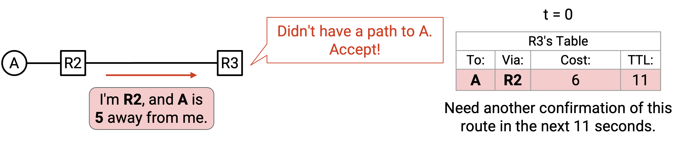
The TTL of 11 tells us that R2 must send us another confirmation of this route in the next 11 seconds. Otherwise, this table entry will be deleted. (Note: The initial TTL of 11 was chosen arbitrarily. In practice, this number would be set by the protocol or the person operating the router.)
Time passes. At t=1, the TTL is now 10. At t=2, the TTL is now 9. At t=3, the TTL is now 8. At t=4, the TTL is now 7.
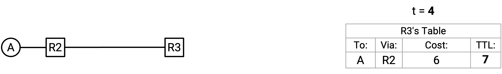
At t=5, R2 does its periodic re-sending of the announcement: “I’m R2, and A is 5 away from me.” We look in our table and realize that R2 is the current next-hop to A, so we should accept this advertisement (per Rule 2) and update the table.
Because we got a confirmation of this route still existing, the TTL can be reset back to its initial value of 11. We need to get another confirmation of this route from R2 in the next 11 seconds.
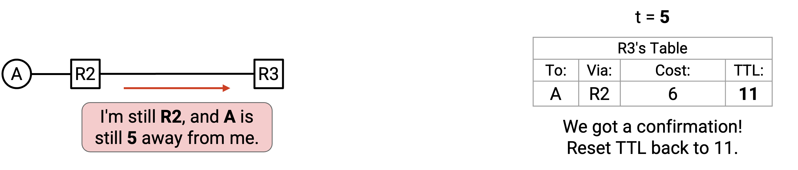
Suppose that a link goes down at t=6, and A is now unreachable. R2 removes its static route to A, and no longer sends any periodic updates.
At t=16 (11 seconds after the last update at t=5), the TTL in our table entry has decreased all the way to 0, so we’ll delete the entry from our table.
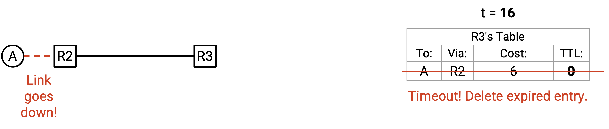
Let’s review our protocol so far.
For each destination:
- If you hear an advertisement for that destination, update the table and reset the TTL if:
- The destination isn’t in the table.
- The advertised cost, plus the link cost to the neighbor, is better than the best-known cost.
- The advertisement is from the current next-hop.
- Advertise to all your neighbors when the table updates, and periodically (advertisement interval).
- If a table entry expires, delete it.
Be careful not to confuse the various timers that the router must maintain.
The advertisement interval tells the router when to advertise routes to neighbors. This is usually a single timer for the entire table, so the router advertises all the routes in the table whenever the advertisement interval timer expires. In the example above, the advertisement interval timer was 5 seconds, since R2 sent advertisements at t=0 and t=5.
By contrast, the TTL tells the router when to delete a table entry. Each table entry has its own independent TTL, counting down for that specific entry. In the example above, the initial TTL was 11 seconds (reset to 11 when we accept an advertisement), and counted down for each table entry.
At this point, we have a mostly-functional routing protocol! Let’s add some optimizations for faster convergence.
Rule 5: Poisoning Expired Routes
Waiting for routes to expire is slow. To see why, let’s rewatch the demo from earlier.
In this example, we are R3. Assume that by t=5, we’ve learned a route to A, via R2, and this route has 11 seconds of TTL remaining.
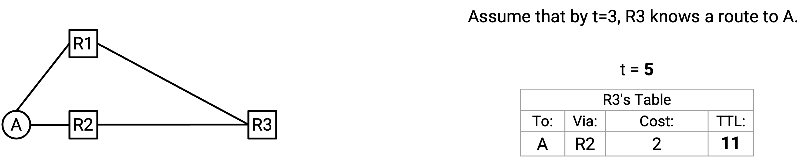
At t=6, the A-to-R2 link goes down! The table entry is now busted, because if we forwarded packets to R2, they wouldn’t actually reach A. However, we don’t know that this entry is busted yet. We have to wait another 10 seconds for this route to expire.
Also at t=6, we get a new announcement: “I’m R1, and A is 1 away from me.” We look in our table, and we already have a way to reach A, so we reject this announcement. (Note: It’s not important for this demo, but we’re assuming we don’t accept equal-cost paths here.)
If only we knew that our existing route is busted, we could accept this new advertisement right now. But instead, we’re doomed to wait another 10 seconds of using this busted path.
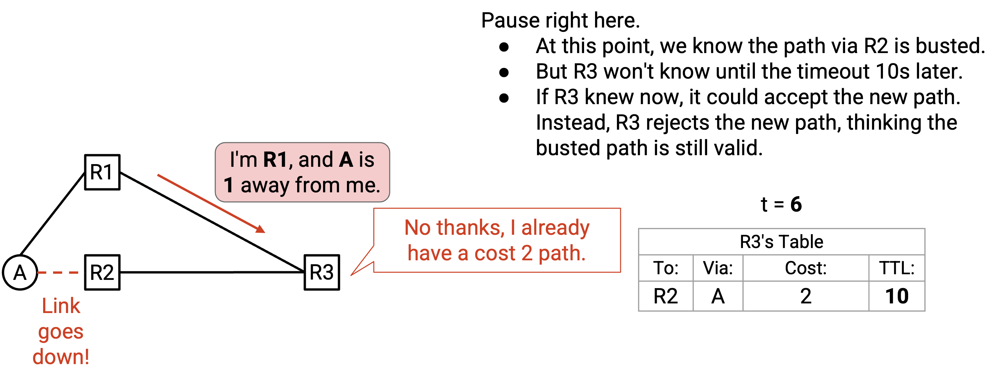
Time passes. By t=11 (five seconds later), the busted route still has 5 seconds of TTL remaining.
At t=11, we get another announcement: “I’m R1, and A is 1 away from me.” R1 is re-sending its announcement from earlier. Again, we look in our table, and we still have an entry for A, so we reject this announcement again.
Again, if only we had some way to know that our existing route is busted…then we could accept this new advertisement. With our current approach, however, we’re doomed to keep using the busted path for the remaining 5 seconds.
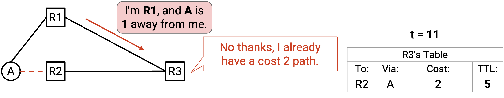
Time passes. By t=16 (five seconds later), the busted route TTL finally reaches 0, and we can delete this entry from the table.
Also at t=16, R1 re-sends its announcement again: “I’m R1, and A is 1 away from me.” Finally, our table doesn’t have a route to A (the busted route just got deleted), so we can accept this announcement.
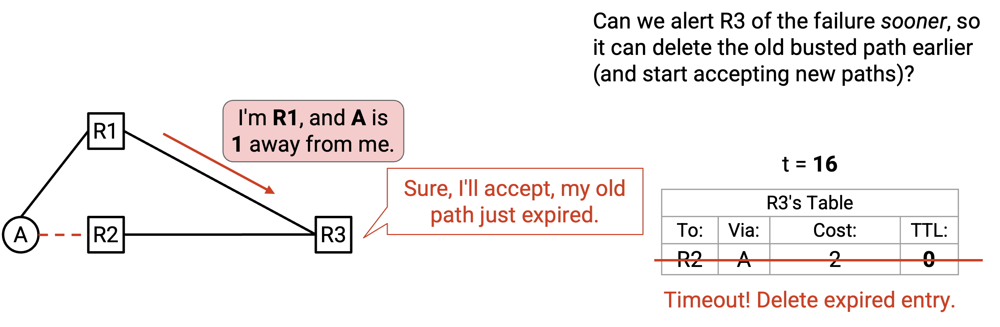
What just happened? At t=6, the failure occurred, and the entry in our table became busted. However, because there were 10 seconds of TTL remaining on the busted route, we were doomed to keep using the busted route for another 10 seconds. During this time, any packets to A will get lost, because we’ll forward the packet along a busted path. Also, we might advertise this busted route to other people, causing them to lose packets as well. Finally, as we saw, we might reject new paths, thinking that the busted path is still valid.
The key problem here is: When something fails, it’s not being reported, so we’re forced to rely on timeouts to delete busted paths. This is slow. Is there any way we can detect failures earlier?
The solution is poison: When something fails, if possible, explicitly advertise that a path is busted.
In English, the new poison announcement that R2 sends would say: “I’m R2, and I no longer have a way to reach A.” In the protocol, we encode this message by advertising a path with cost infinity: “I’m R2, and A is infinity away from me.” This infinite-cost path represents a busted path.
Poisoned paths propagate just like any other path. If we’re forwarding packets to R2, and we get a poison message from R2, we update our forwarding table and replace the cost with infinity (per Rule 2). We can also advertise this infinite-cost poison to our neighbors, so they are also alerted of the busted path. This allows an invalid path to propagate through the network, which can be much faster than waiting for the path to time out.
Let’s rewatch the demo from earlier, but with poisoning on route expiry. As before, assume that by t=5, we’ve learned a route to A, via R2, and this route has 11 seconds of TTL remaining.
At t=6, the A-to-R2 link goes down! The table entry is now busted. However, we don’t know that this entry is busted just yet.
With our modification, instead of saying nothing, R2 sends us a poison announcement: “I’m R2, and A is infinity away from me.” Per Rule 2 (accept from next-hop), we notice that R2 is our next hop, so we accept this announcement and update our table.
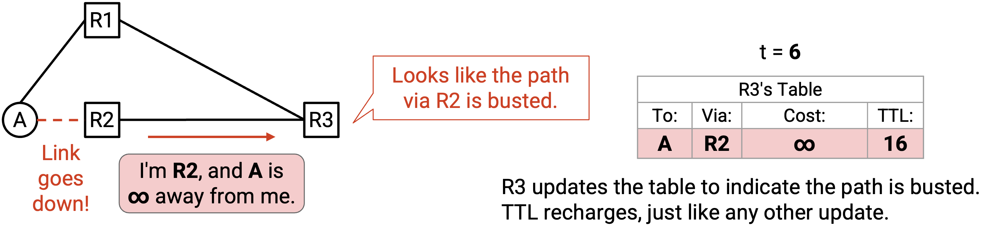
Our table entry now encodes the fact that A is actually unreachable via R2. This entry has a TTL, just like any other table entry. Also, we can advertise this infinite-cost path to our neighbors, just like any other entry. This tells our neighbors that we can no longer reach A either.
Also at t=6, after our table update, we get a new announcement: “I’m R1, and A is 1 away from me.” Using this route has distance 2 (1 from link, 1 from advertisement), which is better than infinity (from the table). We accept this advertisement and update the table. Now, packets for A are routed through R1 instead of R2.
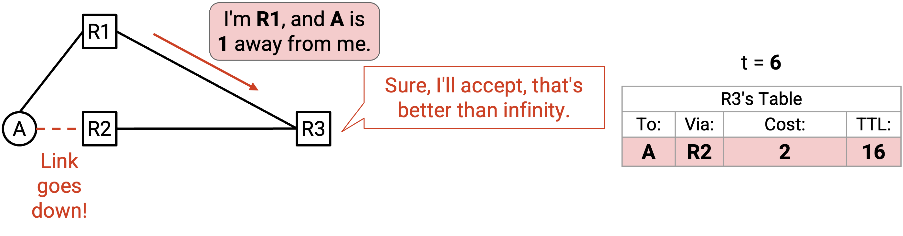
In our earlier demo, at t=6, we were forced to wait 10 seconds for the busted route to expire. Thanks to the poison announcement, we were able to immediately invalidate that busted route at t=6, and accept the new path.
With poison, we were able to converge on a valid path sooner. Between t=6 and t=16, packets will now correctly reach A (whereas in the no-poison approach, packets in this time period would get lost). Also, thanks to the poison, we’ve avoided propagating a busted route to others in that time period. Even better, we can propagate the poison to others and let them know that the path to A via us (and R2) is busted.
Let’s formalize the rules of poison. Poison originates from one of two sources: One or your routes times out, or you notice a local failure (e.g. one of your links goes down). When one of these occurs, you can update the appropriate table entry with cost infinity, reset the TTL, and advertise this poison to your neighbors.
How does poison propagate? When you receive a poison advertisement from your current next-hop, accept it. Your next-hop is telling you that the route no longer exists (similar to advertising worse paths in Rule 2), so you need to update your table. When you update the table, you reset the TTL, just like any other table update. You also advertise the poison to your neighbors, just like any other table update, so that your neighbors also know about the busted route.
One final modification: Now that our tables contain poison, we have to be careful not to forward packets along a poisoned route. If a table entry says that A is reachable via R1 with cost infinity, this really means that A is unreachable via R1. If we get a packet destined for A, we cannot forward it to R1.
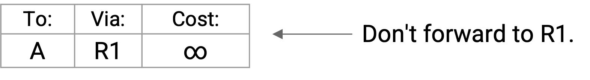
Let’s review our protocol so far.
For each destination:
- If you hear an advertisement for that destination, update the table and reset the TTL if:
- The destination isn’t in the table.
- The advertised cost, plus the link cost to the neighbor, is better than the best-known cost.
- The advertisement is from the current next-hop. Includes poison advertisements.
- Advertise to all your neighbors when the table updates, and periodically (advertisement interval).
- If a table entry expires, make the entry poison and advertise it.
Rule 6A: Split Horizon
Let’s go back to our favorite running example again to demonstrate another problem. Suppose we’re in steady state, and the forwarding tables have the correct shortest routes to A. Announcements are being periodically re-sent, but all announcements are being rejected because we’re in steady state.
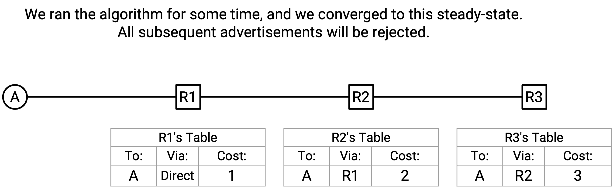
The R1-R2 link goes down, and R2’s entry expires, because R1 stopped sending periodic announcements. R2 now has an empty forwarding table. What happens next?

Eventually, R3 re-sends its announcement to R2, with destination (A), next hop (R3), and cost via next hop (3).
R2’s table is empty, so it accepts this announcement and adds destination (A), next hop (R3), and cost via next hop (3 + 1 = 4).
We’ve created a routing loop! R2 will forward packets to R3, and R3 will forward packets to R2.
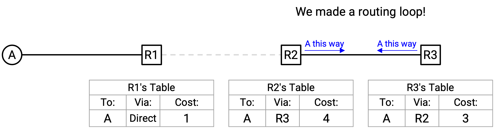
This problem can be tricky to spot at first, so let’s restate it intuitively. Suppose I have accepted a route from Alice, which means that I’ll be forwarding packets to Alice. What happens if I then offer this route back to Alice? If she accepts the route, she’ll end up forwarding packets to me, and I’ll forward the packet back to her.
If the network topology never changed, this advertisement is harmless. The path I’m offering to Alice goes from Alice, to me, back to Alice. This new path is definitely more expensive because it adds an unnecessary loop, so Alice will always reject this advertisement.
However, this advertisement is dangerous if Alice loses her route. Now, my advertisement is fooling Alice into thinking that she can send packets to me. But, my path relies on Alice herself, so if she accepts this path, we would create a loop where she sends packets to me, only for me to send the packet right back to her. The key problem here is: Alice thinks that the path I’m advertising is independent and never goes through Alice. But in fact, my path does go through Alice, so if she accepts my path, she’ll end up forwarding packets back to herself.
To solve this problem, we need to avoid offering Alice a route that already involves herself. We never want Alice to accept a route that sends packets back to herself.
This leads us to a solution called split horizon, where we never advertise a route back to the person who gave us that route.
Let’s review our protocol so far.
For each destination:
- If you hear an advertisement for that destination, update the table and reset the TTL if:
- The destination isn’t in the table.
- The advertised cost, plus the link cost to the neighbor, is better than the best-known cost.
- The advertisement is from the current next-hop. Includes poison advertisements.
- Advertise to all your neighbors when the table updates, and periodically (advertisement interval).
- But don’t advertise back to the next-hop.
- If a table entry expires, make the entry poison and advertise it.
Rule 6B: Poison Reverse
Poison reverse is an alternative way to avoid routing loops. We can use either split horizon or poison reverse to solve the problem from earlier (but not both).
In split horizon, if someone gives me a route, I don’t advertise the route back at them.
By contrast, in poison reverse, if someone gives me a route, I explicitly advertise poison back at them. In other words, I explicitly tell them, “Do not forward packets my way” (because I’d just forward them back to you).
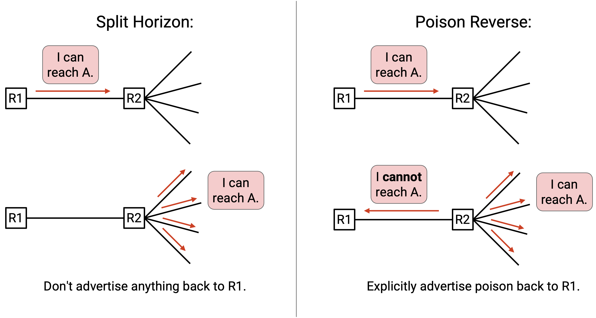
Let’s see the demo again, but using poison reverse instead of split horizon this time. As before, we reach steady state, then R1-R2 goes down, and R2 loses its table entry.
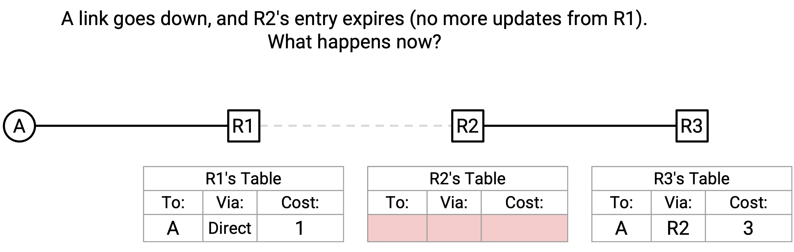
If we implemented neither fix, this is the point when R3 would advertise its route to R2, and R2 would accept a route going through itself.
If we implemented split horizon, R3 would not advertise its route back to R2 at this point.
In the poison reverse approach, R3 explicitly sends an advertisement back to R2: “I’m R3, and A is infinity away from me.”
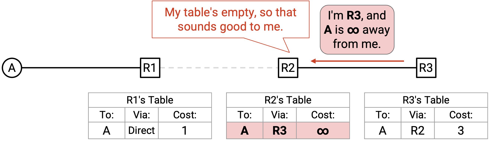
R2 doesn’t have an entry for A (its old one expired), so it accepts this new, poisoned route. Now, R2’s table explicitly says that it cannot reach A via R3. We’ve avoided the routing loop with the help of poison reverse!
In our model of the network, split horizon and poison reverse will both help avoid routing loops. More generally, poison reverse can help eliminate routing loops sooner if they ever arise.
For example, suppose we end up with a routing loop somehow, where R2 and R3 are forwarding packets to each other.
In the split horizon approach, no poison gets sent. R2 got its route from R3, so it won’t send anything to R3. Similarly, R3 got its route from R2, so it won’t send anything to R2. The loop exists until the table entries expire. Until then, packets could get lost in the loop.
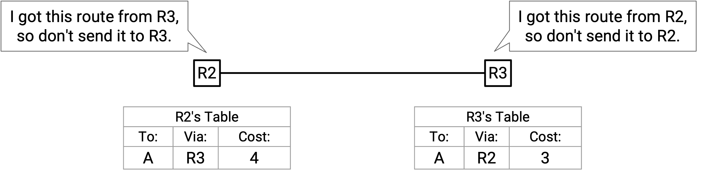
By contrast, if we used the poison reverse approach, R3 explicitly sends poison back to R2: “I’m R3, and A is infinity away from me.” R2 accepts this advertisement (Rule 2, route from its next-hop), and updates its table to invalidate the path via R3. The poison reverse advertisement immediately eliminates the routing loop.
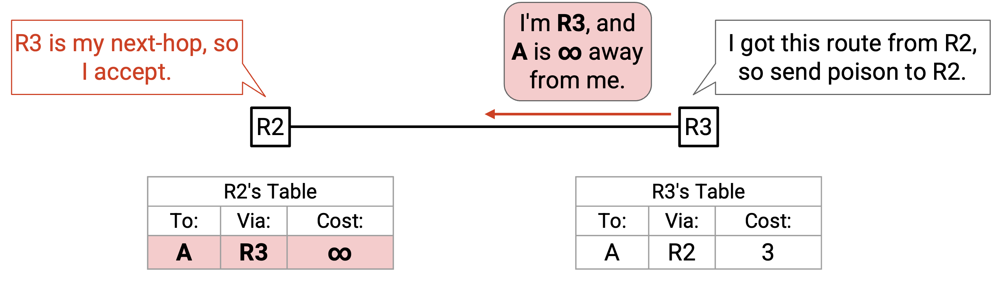
Let’s review our protocol so far.
For each destination:
- If you hear an advertisement for that destination, update the table and reset the TTL if:
- The destination isn’t in the table.
- The advertised cost, plus the link cost to the neighbor, is better than the best-known cost.
- The advertisement is from the current next-hop. Includes poison advertisements.
- Advertise to all your neighbors when the table updates, and periodically (advertisement interval).
- But don’t advertise back to the next-hop.
- …Or, advertise poison back to the next-hop.
- If a table entry expires, make the entry poison and advertise it.
Note that split horizon and poison reverse are two choices, and you can pick exactly one to use (not both). Either you say nothing back to the next-hop, or you explicitly advertise poison back to the next-hop.
Rule 7: Count to Infinity
Split horizon or poison reverse helped us avoid length-2 loops, where R1 forwards to R2, and R2 forwards to R1. But we can still get routing loops involving 3 or more routers.
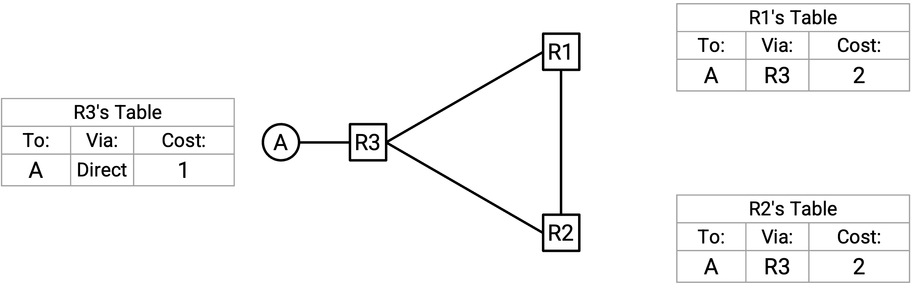
To see why, consider this network. Suppose the tables reach steady-state. R1 and R2 both forward to R3, which forwards to A.
The A-R3 link goes down! A is now unreachable. Per Rule 5, R3 updates its table to show infinite cost to A, and sends this poison to both R2 and R1.
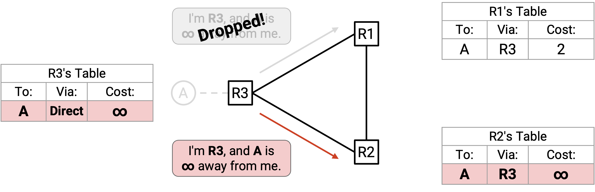
R2 gets the poison advertisement and updates its table (Rule 2, accept from next-hop). Now, both R2 and R3 know that A is unreachable.
The poison advertisement to R1 is dropped! R1 doesn’t see the poison, so it still thinks it can reach A via R3. (The poison can get re-sent later, but for this demo, all the bad things that are about to happen will happen before the poison gets a chance to be re-sent.)
At this point, R2 and R3 can’t reach A, but R1 thinks that it can still reach A.
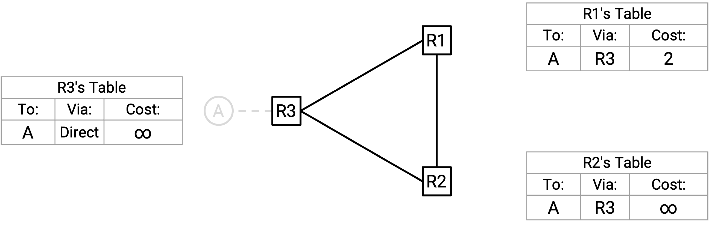
Eventually, R1 sends out an advertisement. R1’s path to A is via R3, so by split horizon, it won’t advertise to R3. However, R1 will still advertise to R2: “I’m R1, and A is 2 away from me.”
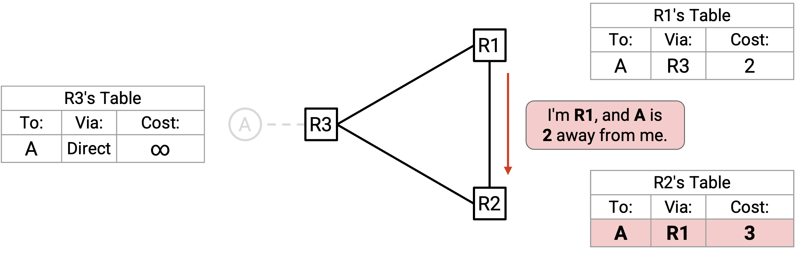
R2 doesn’t have a way to reach A, so it accepts this route. Now, R2 is fooled into thinking it can reach A with cost 3.
R2 sends out an advertisement about its new route. Split horizon dictates that R2 won’t advertise back to R1, but it will still advertise to R3: “I’m R2, and A is 3 away from me.”
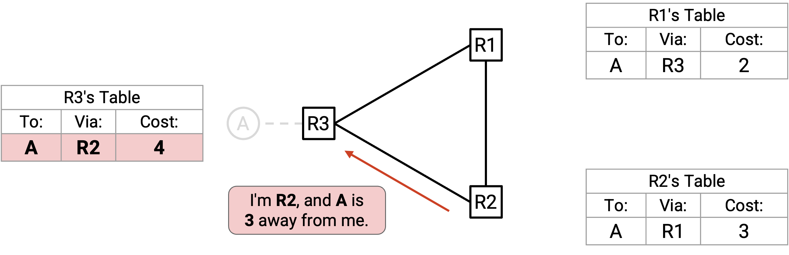
R3 doesn’t have a way to reach A, so it accepts this route. Now, R3 is fooled into thinking it can reach A with cost 4.
Next, R3 sends out an advertisement to R1 (not R2, per split horizon): “I am R3, and A is 4 away from me.”
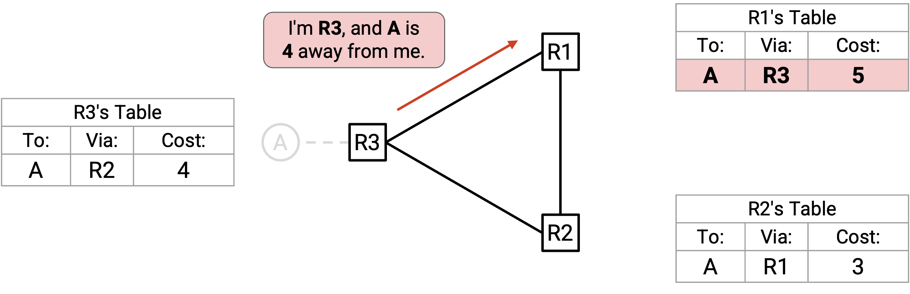
R1 will accept this advertisement (Rule 2, advertisement from next-hop) and update its table. Now, R1 thinks its cost to A is 5.
Maybe you’re seeing where this is going. R1 advertises to R2 (not R3, per split horizon): “I’m R1, and A is 5 away from me.”
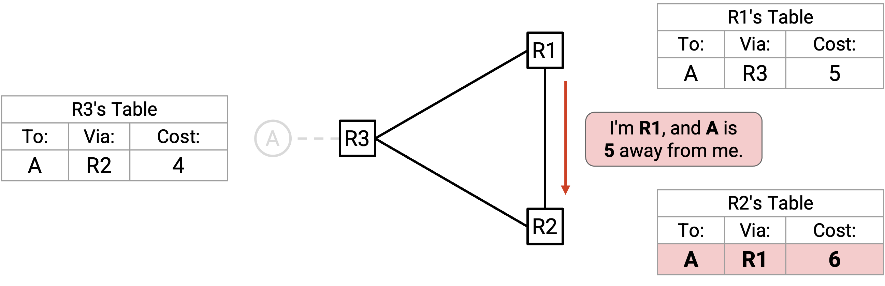
R2 accepts this advertisement (Rule 2), and thinks it can reach A with cost 6.
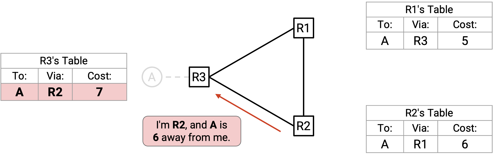
R2 advertises a cost of 6 to R3, who now thinks it can reach A with cost 7.
R3 advertises a cost of 7 to R1, who now thinks it can reach A with a cost of 8.
R1, R2, and R3 will keep sending advertisements to each other in a cycle, with progressively higher costs (which will all be accepted by Rule 2). Also, packets for A will get stuck in a forwarding loop between these routers.
Let’s restate the problem again. The poison didn’t correctly propagate to all hosts, so one of the routers still had a busted path in its table. Then, that busted path got advertised in a loop, and Rule 2 caused the costs to keep increasing, with no end in sight.
Why didn’t split horizon rescue us? Remember, split horizon only stops a router from advertising back to its next-hop. But in this case, the loop is of length 3, and we were never advertising back to the next-hop.
(Note: Poison reverse wouldn’t rescue us either. If R3 advertises poison back to R2, then R2 would ignore that poison, because R2’s next hop is R1, not R3.)
This is called the count-to-infinity problem, and none of our fixes so far (poison expired routes, split horizon, poison reverse) can solve it.
To solve this problem, we will enforce a maximum cost. In RIP, this value is 15. All costs greater than this maximum (i.e. 16 or above) are considered infinity.
With this fix, the loop will still exist for some time, but eventually, all the costs will reach 16 (infinity). Let’s watch this in action.
The costs are increasing with every advertisement. Eventually, R1 advertises to R2: “I’m R1, and A is 14 away from me.” R2 accepts (per Rule 2) and updates its cost to 15.
R2 advertises to R3: “I’m R2, and A is 15 away from me.” R3 accepts (per Rule 2), but instead of updating its cost to 16, the cost is updated to infinity.
Next, R3 advertises to R1: “I’m R3, and A is infinity away from me.” R1 accepts (per Rule 2), and now R1 also has a cost of infinity. (Note: This advertisement looks just like poison, though the infinity originated from counting to infinity instead of detecting a failure.)
Finally, R1 advertises to R2: “I’m R1, and A is infinity away from me.” R2 accepts (per Rule 2), and now all the routers have a cost of infinity.
We’ve reached steady-state again! Any future advertisements would all be advertising infinite cost, and they won’t change the tables. Eventually, the infinite-cost entries would all expire. Or, if another route to A appears, it would replace the infinite-cost entry.
Let’s review our protocol so far.
For each destination:
- If you hear an advertisement for that destination, update the table and reset the TTL if:
- The destination isn’t in the table.
- The advertised cost, plus the link cost to the neighbor, is better than the best-known cost.
- The advertisement is from the current next-hop. Includes poison advertisements.
- Advertise to all your neighbors when the table updates, and periodically (advertisement interval).
- But don’t advertise back to the next-hop.
- …Or, advertise poison back to the next-hop.
- Any cost greater than or equal to 16 is advertised as infinity.
- If a table entry expires, make the entry poison and advertise it.
Eventful Updates
There are three occasions where a router might want to send advertisements:
-
Send advertisements when the table changes. These are called triggered updates. The table might change when we accept a new advertisement, or when a new link is added (e.g. new static route), or when a link goes down (e.g. route gets poisoned).
-
Send advertisements periodically, once every advertisement interval.
-
Send advertisements when a table entry expires (and gets replaced by poison).
Note that triggered updates are an optimization. Instead of advertising every time the table changes, we could just wait for the next advertisement interval to advertise the changes. This protocol would still be correct. However, triggered updates, in addition to the periodic updates, help our protocol converge on correct routes faster, because we propagate new information the instant we learn about it.